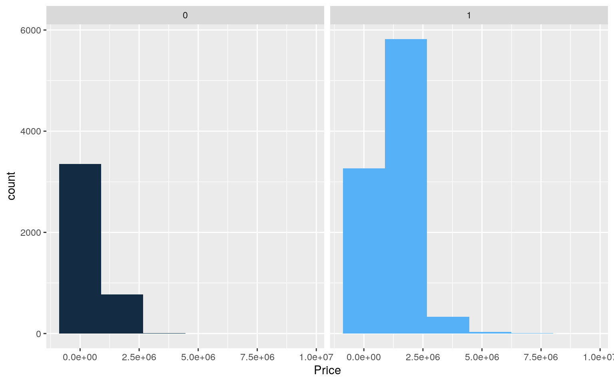
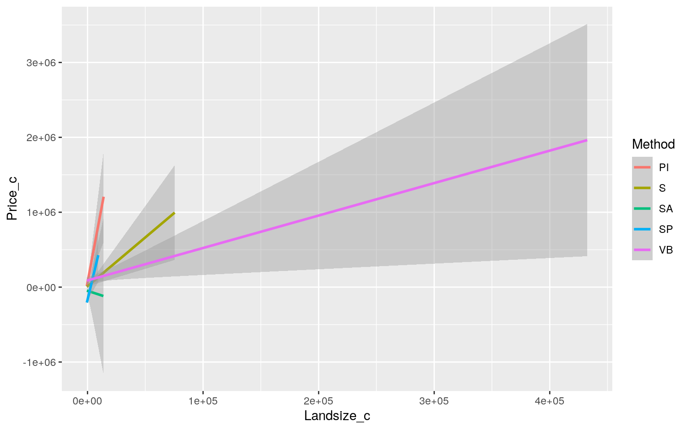
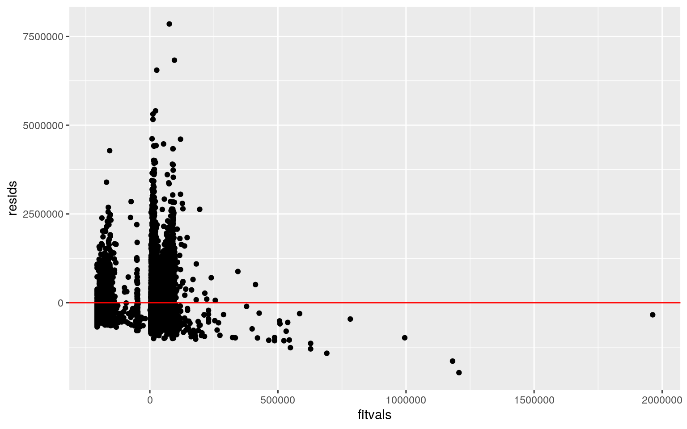
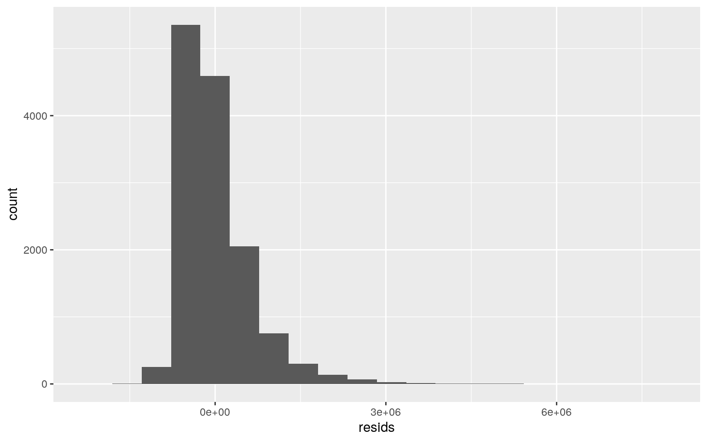
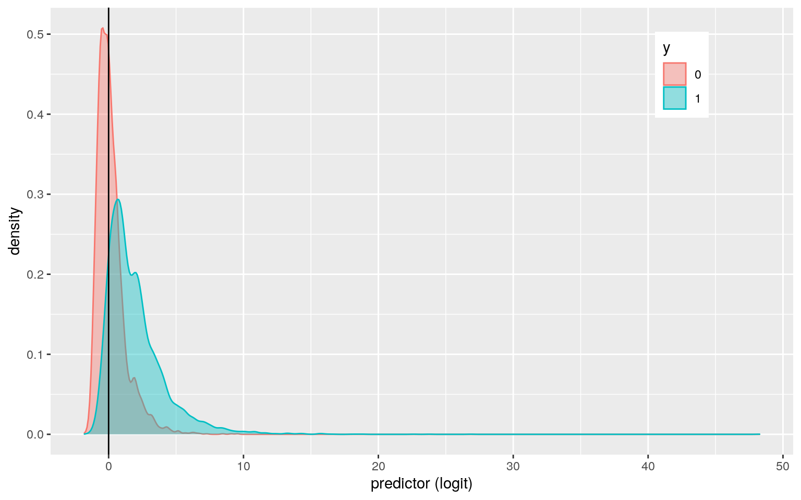
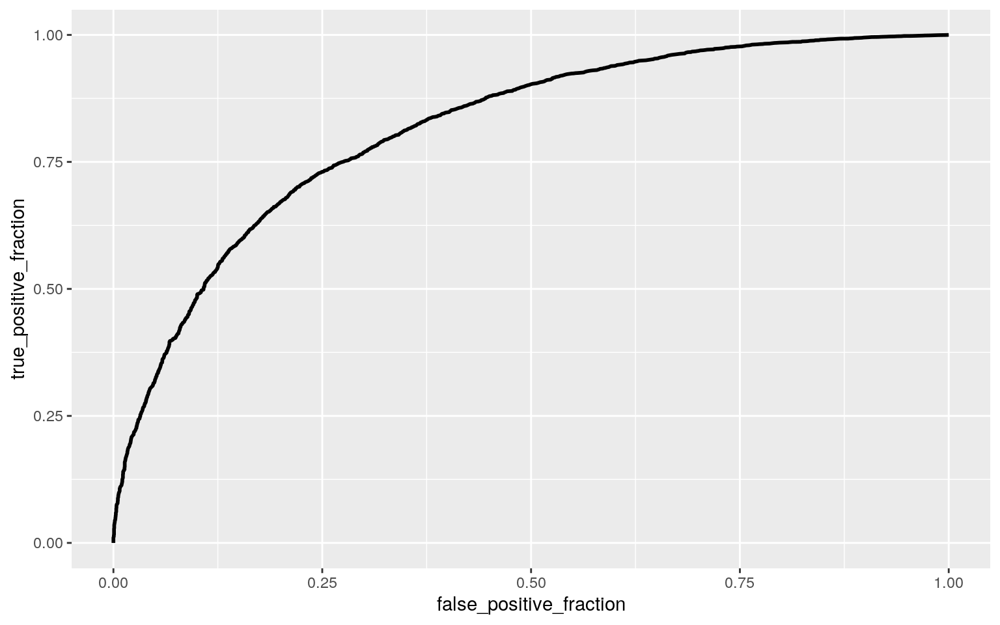

housing <- read.csv("~/melb_data.csv", header=TRUE) # the data set was imported
housing <- housing %>% select(Rooms, Type, Price, Method, Landsize, Lattitude, Longtitude, Regionname) # six variables were selected
housing <- housing %>% mutate(y=as.integer(housing$Type=="h")) # a binary variable was created
housing <- housing %>% mutate(rooms2 = recode(Rooms,"one", "two", "three", "four", "five", "six"))Having visited Melbourne at the beginning of 2020 and a city that I could see myself moving to, looking at the Melbourne housing market is of high interest. The specific variables that are explored in this project are the number of rooms, the type, the price, the method, the land size, and the region name. The type includes “h” (house, cottage, villa, semi, terrace), “u” (unit, duplex), or “t” (townhouse). The price is the price of the property in dollars. The method is how the property was sold. “S” means the property was sold, “SP” means the property was sold prior, “SA” means the property was sold after auction, “PI” means the property was passed in, and “VB” means the property had a vendor bid. Finally, the region name is the property’s location in a general region. There are a total of 13,580 observations.
# a MANOVA test was run
man1 <- manova(cbind(Price, Landsize, Lattitude, Longtitude)~Regionname, data=housing)
summary(man1)## Df Pillai approx F num Df den Df Pr(>F)
## Regionname 7 1.3452 982.44 28 54288 < 2.2e-16 ***
## Residuals 13572
## ---
## Signif. codes: 0 '***' 0.001 '**' 0.01 '*' 0.05 '.' 0.1
' ' 1# due to significance, univariate ANOVAs were run
summary.aov(man1)## Response Price :
## Df Sum Sq Mean Sq F value Pr(>F)
## Regionname 7 7.0996e+14 1.0142e+14 284.4 < 2.2e-16 ***
## Residuals 13572 4.8400e+15 3.5662e+11
## ---
## Signif. codes: 0 '***' 0.001 '**' 0.01 '*' 0.05 '.' 0.1
' ' 1
##
## Response Landsize :
## Df Sum Sq Mean Sq F value Pr(>F)
## Regionname 7 6.5812e+08 94016517 5.9185 6.861e-07 ***
## Residuals 13572 2.1559e+11 15885164
## ---
## Signif. codes: 0 '***' 0.001 '**' 0.01 '*' 0.05 '.' 0.1
' ' 1
##
## Response Lattitude :
## Df Sum Sq Mean Sq F value Pr(>F)
## Regionname 7 52.065 7.4378 3036.9 < 2.2e-16 ***
## Residuals 13572 33.240 0.0024
## ---
## Signif. codes: 0 '***' 0.001 '**' 0.01 '*' 0.05 '.' 0.1
' ' 1
##
## Response Longtitude :
## Df Sum Sq Mean Sq F value Pr(>F)
## Regionname 7 109.011 15.5730 5618.1 < 2.2e-16 ***
## Residuals 13572 37.621 0.0028
## ---
## Signif. codes: 0 '***' 0.001 '**' 0.01 '*' 0.05 '.' 0.1
' ' 1# post-hoc t-tests for significant variables
pairwise.t.test(housing$Price, housing$Regionname, p.adj="none")##
## Pairwise comparisons using t tests with pooled SD
##
## data: housing$Price and housing$Regionname
##
## Eastern Metropolitan Eastern Victoria Northern
Metropolitan
## Eastern Victoria 1.3e-06 - -
## Northern Metropolitan < 2e-16 0.01642 -
## Northern Victoria 7.3e-08 0.39723 0.00122
## South-Eastern Metropolitan 1.8e-08 0.01015 0.40479
## Southern Metropolitan < 2e-16 3.7e-16 < 2e-16
## Western Metropolitan < 2e-16 0.04434 0.02947
## Western Victoria 3.7e-11 0.02369 2.3e-06
## Northern Victoria South-Eastern Metropolitan Southern
Metropolitan
## Eastern Victoria - - -
## Northern Metropolitan - - -
## Northern Victoria - - -
## South-Eastern Metropolitan 0.00076 - -
## Southern Metropolitan < 2e-16 < 2e-16 -
## Western Metropolitan 0.00383 0.06148 < 2e-16
## Western Victoria 0.16133 1.5e-06 < 2e-16
## Western Metropolitan
## Eastern Victoria -
## Northern Metropolitan -
## Northern Victoria -
## South-Eastern Metropolitan -
## Southern Metropolitan -
## Western Metropolitan -
## Western Victoria 1.0e-05
##
## P value adjustment method: nonepairwise.t.test(housing$Landsize, housing$Regionname, p.adj="none")##
## Pairwise comparisons using t tests with pooled SD
##
## data: housing$Landsize and housing$Regionname
##
## Eastern Metropolitan Eastern Victoria Northern
Metropolitan
## Eastern Victoria 3.3e-05 - -
## Northern Metropolitan 0.5931 1.6e-05 -
## Northern Victoria 1.6e-05 0.6245 8.5e-06
## South-Eastern Metropolitan 0.9253 5.5e-05 0.8205
## Southern Metropolitan 0.2944 9.4e-06 0.4897
## Western Metropolitan 0.2694 8.8e-06 0.4389
## Western Victoria 0.9761 0.0101 0.9026
## Northern Victoria South-Eastern Metropolitan Southern
Metropolitan
## Eastern Victoria - - -
## Northern Metropolitan - - -
## Northern Victoria - - -
## South-Eastern Metropolitan 2.5e-05 - -
## Southern Metropolitan 5.3e-06 0.5944 -
## Western Metropolitan 5.0e-06 0.5506 0.8673
## Western Victoria 0.0041 0.9546 0.8361
## Western Metropolitan
## Eastern Victoria -
## Northern Metropolitan -
## Northern Victoria -
## South-Eastern Metropolitan -
## Southern Metropolitan -
## Western Metropolitan -
## Western Victoria 0.8192
##
## P value adjustment method: nonepairwise.t.test(housing$Lattitude, housing$Regionname, p.adj="none")##
## Pairwise comparisons using t tests with pooled SD
##
## data: housing$Lattitude and housing$Regionname
##
## Eastern Metropolitan Eastern Victoria Northern
Metropolitan
## Eastern Victoria < 2e-16 - -
## Northern Metropolitan < 2e-16 < 2e-16 -
## Northern Victoria < 2e-16 < 2e-16 < 2e-16
## South-Eastern Metropolitan < 2e-16 1.7e-06 < 2e-16
## Southern Metropolitan < 2e-16 < 2e-16 < 2e-16
## Western Metropolitan 4.6e-05 < 2e-16 < 2e-16
## Western Victoria < 2e-16 < 2e-16 3.1e-09
## Northern Victoria South-Eastern Metropolitan Southern
Metropolitan
## Eastern Victoria - - -
## Northern Metropolitan - - -
## Northern Victoria - - -
## South-Eastern Metropolitan < 2e-16 - -
## Southern Metropolitan < 2e-16 < 2e-16 -
## Western Metropolitan < 2e-16 < 2e-16 < 2e-16
## Western Victoria 3.0e-16 < 2e-16 < 2e-16
## Western Metropolitan
## Eastern Victoria -
## Northern Metropolitan -
## Northern Victoria -
## South-Eastern Metropolitan -
## Southern Metropolitan -
## Western Metropolitan -
## Western Victoria < 2e-16
##
## P value adjustment method: nonepairwise.t.test(housing$Longtitude, housing$Regionname, p.adj="none")##
## Pairwise comparisons using t tests with pooled SD
##
## data: housing$Longtitude and housing$Regionname
##
## Eastern Metropolitan Eastern Victoria Northern
Metropolitan
## Eastern Victoria < 2e-16 - -
## Northern Metropolitan < 2e-16 < 2e-16 -
## Northern Victoria < 2e-16 < 2e-16 < 2e-16
## South-Eastern Metropolitan 4.2e-09 < 2e-16 < 2e-16
## Southern Metropolitan < 2e-16 < 2e-16 < 2e-16
## Western Metropolitan < 2e-16 < 2e-16 < 2e-16
## Western Victoria < 2e-16 < 2e-16 < 2e-16
## Northern Victoria South-Eastern Metropolitan Southern
Metropolitan
## Eastern Victoria - - -
## Northern Metropolitan - - -
## Northern Victoria - - -
## South-Eastern Metropolitan < 2e-16 - -
## Southern Metropolitan < 2e-16 < 2e-16 -
## Western Metropolitan 0.0037 < 2e-16 < 2e-16
## Western Victoria < 2e-16 < 2e-16 < 2e-16
## Western Metropolitan
## Eastern Victoria -
## Northern Metropolitan -
## Northern Victoria -
## South-Eastern Metropolitan -
## Southern Metropolitan -
## Western Metropolitan -
## Western Victoria < 2e-16
##
## P value adjustment method: none# probability of at least one type I error
Type1ErrorCount <- replicate(5000,{
pvals<-NULL
for(i in 1:112){
samp1 <- rnorm(20, mean=0)
samp2 <- rnorm(20, mean=0)
pvals[i] <- t.test(samp1, samp2, var.eq=T)$p.val
}
sum(pvals<.05)
})
mean(Type1ErrorCount>0)## [1] 0.9966# bonferroni correction
0.05/117## [1] 0.0004273504In performing the MANOVA test, the null hypothesis is for each response variable, the means of all groups are equal. The alternative hypothesis is that for at least one response variable, at least one group mean differs. Based on the results from the MANOVA test, the result is significant (p<2.2e-16), meaning that we can reject the null hypothesis and that for at least one response variable, at least one group mean differs. Because the MANOVA was significant, a univariate ANOVA was run to determine which response variables are significant. Based on the data, price, land size, latitude, and longitude were all significant where at least one region differed. Post-hoc t-tests were run and in the end, a total of 117 tests were performed (1 MANOVA, 4 ANOVAs, and 112 t-tests). The probability of making at least one Type I error is 99.56%. After adjusting the significance level using a bonferroni correction, the significance level is now 0.00043. However, even after this adjustment, all tests are still significant, meaning that for all response variables, at least one group mean differs. In the MANOVA assumptions, we cannot assume that the data was randomly collected, as this was most likely a list of all properties sold in Melbourne. Additionally, we cannot assume that the dependent variables have multivariate normality.
t.test(data=housing,Price~y) # randomization test: mean difference##
## Welch Two Sample t-test
##
## data: Price by y
## t = -63.551, df = 13330, p-value < 2.2e-16
## alternative hypothesis: true difference in means is not
equal to 0
## 95 percent confidence interval:
## -565853.0 -531991.5
## sample estimates:
## mean in group 0 mean in group 1
## 693742.5 1242664.8ggplot(housing, aes(Price,fill=y)) + geom_histogram(bins=6.5) + facet_wrap(~y) + theme(legend.position="none") # plot 
A two-sample t-test was run in order to determine if there was a mean difference in price between properties that were either a house, cottage, villa, semi, or terrace or the other types of properties. The null hypothesis was that the true difference in mean price is equal to zero, while the alternative hypothesis was that the true difference in mean price is not equal to zero. In performing the t-test, it was found that the results were significant (p-value<2.2e-16). We can reject the null hypothesis and say that there is a mean difference in price between properties that are either a house, cottage, villa, semi, or terrace versus the other types of properties.
housing$Price_c <- housing$Price - mean(housing$Price) # mean-center
housing$Landsize_c <- housing$Landsize - mean(housing$Landsize) # mean-center
fit<-lm(Price_c~Method*Landsize_c, data=housing)
summary(fit) # linear regression model##
## Call:
## lm(formula = Price_c ~ Method * Landsize_c, data =
housing)
##
## Residuals:
## Min 1Q Median 3Q Max
## -1967520 -419306 -163569 254817 7848479
##
## Coefficients:
## Estimate Std. Error t value Pr(>|t|)
## (Intercept) 60578.09 16060.16 3.772 0.000163 ***
## MethodS -48579.46 17394.53 -2.793 0.005233 **
## MethodSA -109777.28 68355.89 -1.606 0.108305
## MethodSP -230642.11 22338.15 -10.325 < 2e-16 ***
## MethodVB 28649.71 24372.25 1.176 0.239813
## Landsize_c 82.22 19.27 4.267 1.99e-05 ***
## MethodS:Landsize_c -69.19 19.77 -3.500 0.000466 ***
## MethodSA:Landsize_c -87.27 47.91 -1.821 0.068556 .
## MethodSP:Landsize_c -17.91 30.94 -0.579 0.562558
## MethodVB:Landsize_c -77.89 19.32 -4.031 5.58e-05 ***
## ---
## Signif. codes: 0 '***' 0.001 '**' 0.01 '*' 0.05 '.' 0.1
' ' 1
##
## Residual standard error: 634500 on 13570 degrees of
freedom
## Multiple R-squared: 0.01558, Adjusted R-squared: 0.01493
## F-statistic: 23.86 on 9 and 13570 DF, p-value: < 2.2e-16ggplot(housing, aes(Landsize_c, Price_c, color=Method)) + geom_smooth(method="lm") # regression plot
resids<-fit$residuals; fitvals<-fit$fitted.values # checking for linearity and homoskedasticity
ggplot() + geom_point(aes(fitvals,resids)) + geom_hline(yintercept=0, col="red")
ggplot() + geom_histogram(aes(resids), bins=20) # checking for normality
library(sandwich); library(lmtest)
summary(fit)$coef[,1:2] # uncorrected SEs## Estimate Std. Error
## (Intercept) 60578.08706 16060.16491
## MethodS -48579.46352 17394.52814
## MethodSA -109777.28052 68355.89197
## MethodSP -230642.11451 22338.14815
## MethodVB 28649.70897 24372.24817
## Landsize_c 82.21866 19.26684
## MethodS:Landsize_c -69.18799 19.76685
## MethodSA:Landsize_c -87.27226 47.91289
## MethodSP:Landsize_c -17.91362 30.93563
## MethodVB:Landsize_c -77.88555 19.32078coeftest(fit, vcov=vcovHC(fit))[,1:2] # corrected SEs## Estimate Std. Error
## (Intercept) 60578.08706 18890.37842
## MethodS -48579.46352 19970.35336
## MethodSA -109777.28052 60771.30310
## MethodSP -230642.11451 22957.05428
## MethodVB 28649.70897 29936.26388
## Landsize_c 82.21866 46.46165
## MethodS:Landsize_c -69.18799 46.95418
## MethodSA:Landsize_c -87.27226 229.25493
## MethodSP:Landsize_c -17.91362 52.96102
## MethodVB:Landsize_c -77.88555 51.49375The mean/predicted price for properties that were passed in (PI) with a land size of 0 is $60,578.09. Properties that were sold (S) with a land size of 0 have a predicted price that is $48,579.46 lower than PI properties with a land size of 0. Properties that were sold after auction (SA) with a land size of 0 have a predicted price that is $109,777.28 lower than PI properties with a land size of 0. Properties that were sold prior (SP) with a land size of 0 have a predicted price that is $230,642.11 lower than PI properties with a land size of 0. Properties that had a vendor bid (VB) with a land size of 0 have a predicted price that is $28,649.71 higher than PI properties with a land size of 0. For every 1 unit increase in the land size, the predicted price goes up by $82.22 for PI properties. The slope of land size on price for S properties is 69.19 less than for PI properties. The slope of land size on price for SA properties is 87.27 less than for PI properties. The slope of land size on price for SP properties is 17.91 less than for PI properties. The slope of land size on price for VB properties is 77.89 less than for PI properties. 0.01558 of variability in the outcome is explained by the model.
When checking the assumptions of linearity, normality, and homoskedasticity, all assumptions seem to be violated. In looking at linearity and homoskedasticity, the residuals are not normally distributed and there is not an even scatter of points. In looking at normality, the histogram does not display a normal distribution. In recomputing regression results with robust standard errors, the standard error for the slopes increased and you will get a smaller t-statistic and a larger p-value, meaning you are less likely to reject the null hypothesis.
fit<-lm(Price_c~Method*Landsize_c, data=housing)
resids1<-fit$residuals
fitted<-fit$fitted.values
resid_resamp<-replicate(5000,{
new_resids<-sample(resids1,replace=TRUE)
housing$new_y<-fitted+new_resids
fit<-lm(new_y~Method*Landsize_c,data=housing)
coef(fit)
})
resid_resamp%>%t%>%as.data.frame%>%summarize_all(sd)## (Intercept) MethodS MethodSA MethodSP MethodVB
Landsize_c MethodS:Landsize_c MethodSA:Landsize_c
## 1 16237.32 17615.88 69042.15 22179.57 24478.32 19.56791
19.98218 47.87324
## MethodSP:Landsize_c MethodVB:Landsize_c
## 1 30.90049 19.63001After computing bootstrapped standard errors by resampling residuals, there were changes in the standard errors when compared to the original and robust standard errors. In comparing the resampled residuals to the original standard errors, there doesn’t seem to be as big of a change in the standard errors as when comparing the resampled residuals to the robust standard errors.
fit1<-glm(y~Landsize_c+Price_c, data=housing, family="binomial") # logistic regression model
coeftest(fit1)##
## z test of coefficients:
##
## Estimate Std. Error z value Pr(>|z|)
## (Intercept) 1.4331e+00 3.0106e-02 47.6019 < 2.2e-16 ***
## Landsize_c 9.6258e-05 2.7274e-05 3.5293 0.0004166 ***
## Price_c 3.2059e-06 7.2496e-08 44.2216 < 2.2e-16 ***
## ---
## Signif. codes: 0 '***' 0.001 '**' 0.01 '*' 0.05 '.' 0.1
' ' 1probs<-predict(fit1, type="response")
table(predict=as.numeric(probs>.5), truth=housing$y)%>%addmargins # confusion matrix## truth
## predict 0 1 Sum
## 0 2140 1012 3152
## 1 1991 8437 10428
## Sum 4131 9449 135808437/9449 # Accuracy, Sensitivity (TPR)## [1] 0.89289872140/4131 # Specificity (TNR)## [1] 0.51803448437/10428 # Precision (PPV)## [1] 0.8090717class_diag(probs,housing$y) # AUC## acc sens spec ppv auc
## 1 0.778866 0.8928987 0.5180344 0.8090717 0.8151038housing$logit<-predict(fit1,type="link") # density plot
housing%>%mutate(y=as.factor(y))%>%ggplot(aes(logit,color=y,fill=y))+geom_density(alpha=.4)+theme(legend.position=c(.85,.85))+geom_vline(xintercept=0)+xlab("predictor (logit)")
library(plotROC) # ROC curve
ROCplot<-ggplot(housing)+geom_roc(aes(d=y, m=probs), n.cuts=0)
ROCplot
calc_auc(ROCplot) # calculate AUC## PANEL group AUC
## 1 1 -1 0.8151053Controlling for the size of the land, for every $1 increase in the price, the odds of a property being a house, cottage, villa, semi, terrace, change by a factor of e^3.2059e-06=1. Controlling for the price, for every 1 unit increase in the land size, the odds of a property being a house, cottage, villa, semi, or terrace, change by a factor of e^9.6258e-05=1.
The TPR was found to be about 0.89, which means that it’s the probability of detecting a property to be a house, cottage, villa, semi, or terrace if it really is one of those types of properties. The TNR was found to be about 0.52, which means that it’s the probability of a the property not being a house, cottage, villa, semi, or terrace if it’s not one of those properties. The PPV was found to be about 0.81, which means that it’s the proportion classified as a house, cottage, villa, semi, or terrace when it actually is. The AUC was found to be 0.82, which means it can be classified as “good.” Upon generating the ROC curve and calculating the AUC, the AUC was found to be about 0.82. This means that my AUC is considered “good.”
housing1<-housing%>%select(-Price_c, -Landsize_c, -logit, -rooms2, -Type)
fit2<-glm(y~., data=housing1, family="binomial") # logistic regression model
coeftest(fit2)##
## z test of coefficients:
##
## Estimate Std. Error z value Pr(>|z|)
## (Intercept) 3.3918e+02 7.1171e+01 4.7658 1.881e-06 ***
## Rooms 9.8122e-01 3.9956e-02 24.5574 < 2.2e-16 ***
## Price 3.6361e-06 1.0035e-07 36.2346 < 2.2e-16 ***
## MethodS 6.3590e-02 8.5605e-02 0.7428 0.457584
## MethodSA 2.3933e-01 3.1799e-01 0.7526 0.451669
## MethodSP -1.4979e-01 1.0539e-01 -1.4213 0.155226
## MethodVB -4.1315e-01 1.2012e-01 -3.4394 0.000583 ***
## Landsize 2.2553e-05 2.1413e-05 1.0532 0.292229
## Lattitude 5.0362e+00 5.2465e-01 9.5990 < 2.2e-16 ***
## Longtitude -1.0597e+00 4.7605e-01 -2.2260 0.026013 *
## RegionnameEastern Victoria 3.5985e+00 6.5872e-01 5.4628
4.686e-08 ***
## RegionnameNorthern Metropolitan 5.5589e-02 1.1761e-01
0.4727 0.636458
## RegionnameNorthern Victoria 1.4105e+01 2.0272e+02 0.0696
0.944529
## RegionnameSouth-Eastern Metropolitan 2.0507e+00
2.1600e-01 9.4942 < 2.2e-16 ***
## RegionnameSouthern Metropolitan -1.3353e+00 1.1579e-01
-11.5329 < 2.2e-16 ***
## RegionnameWestern Metropolitan 4.2929e-01 1.6301e-01
2.6335 0.008450 **
## RegionnameWestern Victoria 1.4785e+01 2.4382e+02 0.0606
0.951647
## ---
## Signif. codes: 0 '***' 0.001 '**' 0.01 '*' 0.05 '.' 0.1
' ' 1prob <- predict(fit2,type="response")
class_diag(prob,housing1$y) # in-sample classification diagnostics## acc sens spec ppv auc
## 1 0.8622239 0.9340671 0.697894 0.8761167 0.8952705set.seed(1234) # 10-fold CV
k=10
data<-housing1[sample(nrow(housing1)),]
folds<-cut(seq(1:nrow(housing1)), breaks=k, labels=FALSE)
diags<-NULL
for(i in 1:k){
train<-data[folds!=i,]
test<-data[folds==i,]
truth<-test$y
fit<-glm(y~., data=housing1,family="binomial")
probs<-predict(fit,newdata=test, type="response")
diags<-rbind(diags,class_diag(probs,truth))
}
summarize_all(diags,mean) # out-of-sample classification diagnostics## acc sens spec ppv auc
## 1 0.8622239 0.9340763 0.6974268 0.8762395 0.8950098library(glmnet)
y<-as.matrix(housing1$y) # grab response
x<-model.matrix(y~., data=housing1)[,-1] # grab predictors
head(x)## Rooms Price MethodS MethodSA MethodSP MethodVB Landsize
Lattitude Longtitude
## 1 2 1480000 1 0 0 0 202 -37.7996 144.9984
## 2 2 1035000 1 0 0 0 156 -37.8079 144.9934
## 3 3 1465000 0 0 1 0 134 -37.8093 144.9944
## 4 3 850000 0 0 0 0 94 -37.7969 144.9969
## 5 4 1600000 0 0 0 1 120 -37.8072 144.9941
## 6 2 941000 1 0 0 0 181 -37.8041 144.9953
## RegionnameEastern Victoria RegionnameNorthern
Metropolitan RegionnameNorthern Victoria
## 1 0 1 0
## 2 0 1 0
## 3 0 1 0
## 4 0 1 0
## 5 0 1 0
## 6 0 1 0
## RegionnameSouth-Eastern Metropolitan RegionnameSouthern
Metropolitan
## 1 0 0
## 2 0 0
## 3 0 0
## 4 0 0
## 5 0 0
## 6 0 0
## RegionnameWestern Metropolitan RegionnameWestern
Victoria
## 1 0 0
## 2 0 0
## 3 0 0
## 4 0 0
## 5 0 0
## 6 0 0cv<-cv.glmnet(x, y, family="binomial")
lasso<-glmnet(x, y, family="binomial", lambda=cv$lambda.1se)
coef(lasso) # performed LASSO## 17 x 1 sparse Matrix of class "dgCMatrix"
## s0
## (Intercept) 1.479633e+02
## Rooms 9.797963e-01
## Price 2.817074e-06
## MethodS 6.789125e-02
## MethodSA .
## MethodSP .
## MethodVB -1.517532e-01
## Landsize .
## Lattitude 2.253016e+00
## Longtitude -4.609684e-01
## RegionnameEastern Victoria 9.252609e-01
## RegionnameNorthern Metropolitan .
## RegionnameNorthern Victoria 4.381381e-01
## RegionnameSouth-Eastern Metropolitan 6.994597e-01
## RegionnameSouthern Metropolitan -1.385226e+00
## RegionnameWestern Metropolitan 1.673310e-01
## RegionnameWestern Victoria 8.624882e-01set.seed(1234) # 10-fold CV on LASSO
k=10
data<-housing1%>%sample_frac
folds<-ntile(1:nrow(data),n=10)
diags<-NULL
for(i in 1:k){
train<-data[folds!=i,]
test<-data[folds==i,]
truth<-test$y
fit<-glm(y~Rooms+Price+Lattitude+Longtitude,
data=train, family="binomial")
probs<-predict(fit, newdata=test, type="response")
diags<-rbind(diags,class_diag(probs,truth))
}
diags%>%summarize_all(mean)## acc sens spec ppv auc
## 1 0.8419735 0.9143369 0.6765111 0.8661131 0.8739883With the in-sample classification diagnostics, the TPR was found to be about 0.93. This means that it’s the probability of detecting a property to be a house, cottage, villa, semi, or terrace if it really is one of those types of properties. The TNR was found to be about 0.70, which means that it’s the probability of a the property not being a house, cottage, villa, semi, or terrace if it’s not one of those properties. The PPV was found to be about 0.88, which means that it’s the proportion classified as a house, cottage, villa, semi, or terrace when it actually is. The AUC was found to be 0.90, which means it can be classified as “great.” After performing a 10-fold CV and computing average out-of-sample classification diagnostics, the AUC was found to still be about 0.90, which means that it can be classified as “great.” In comparing with the in-sample metrics, the numbers remained roughly the same for all measurements.
Once LASSO was performed on the model, the variables that were retained were the number of rooms, the price, the latitude and the longitude. A 10-fold CV was then performed only on the variables that LASSO selected. In comparing the model’s out-of-sample AUC of 0.87, it decreased from the AUC of the other logistic regressions that were run.